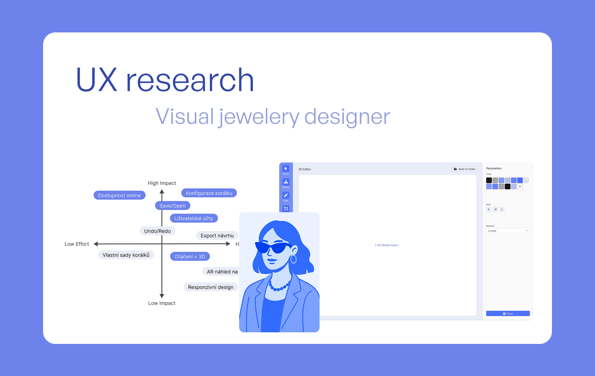
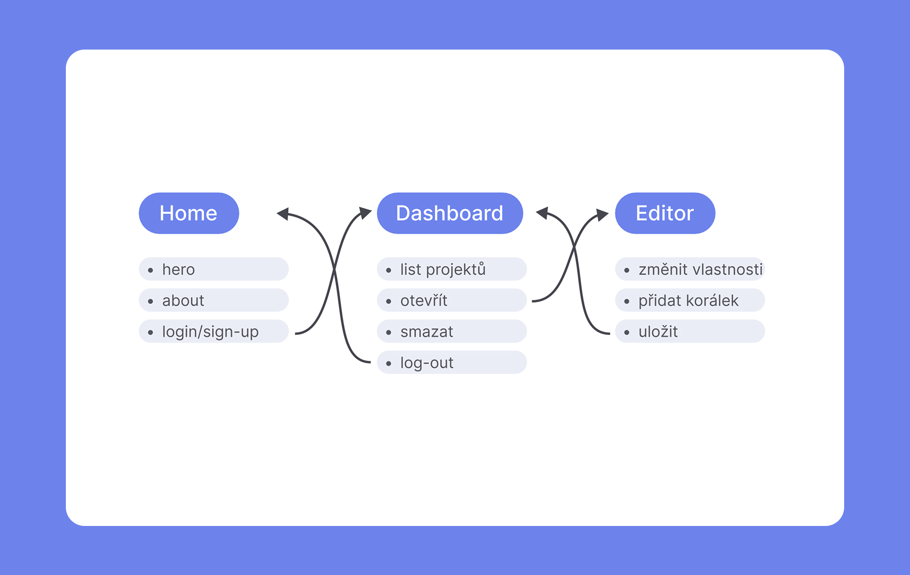
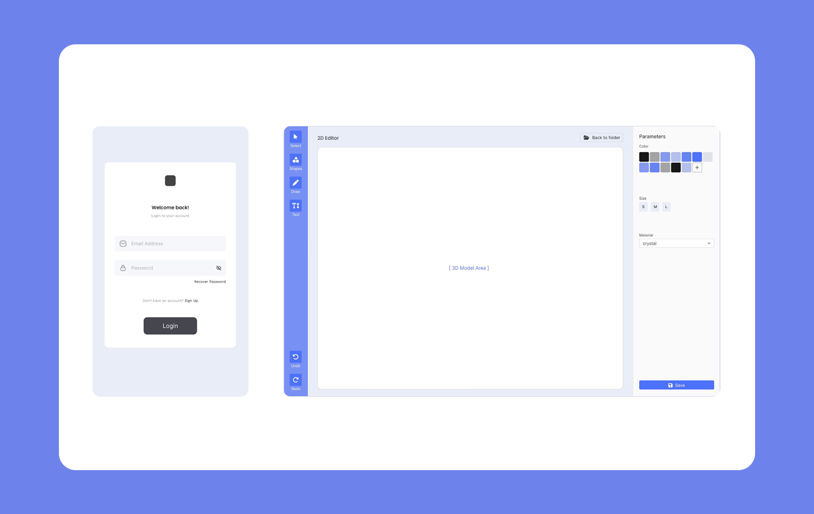
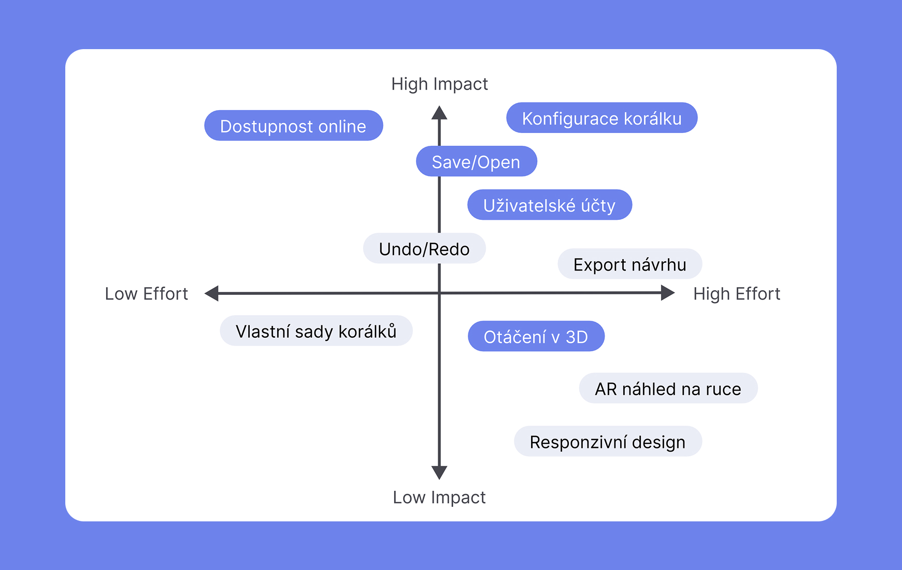

Primary and secondary research critically redefined the project's direction. Interviews and a survey of 106 respondents debunked the initial focus and refined the requirements. I designed the interface as a "digital playground" that removes complex parameters. It allows users to intuitively drag, drop, and rotate 3D bead combinations, bringing their vision to life.
Visual jewelry designer UX research
Role
UX Designer
Company
Practice Project
Product
UX Research Report
Focus
User Research, Prototyping

Mission
Simplify the process
Many desire personalized jewelry that reflects their specific style but lack the technical skills to design it or the ability to clearly describe their vision to a maker. The challenge was to create a digital tool that simplifies jewelry design, allowing users to move beyond mass-produced items without needing to learn complex professional tools.


The Concept

Result
Intuitive creation
The final prototype successfully fills the market gap between rigid e-shop offers and difficult custom production. User testing confirmed that the streamlined interface removes the friction from the design process, allowing anyone to easily transform a vague idea into a concrete, personalized product. Read more in the research report.
UX Research Report →